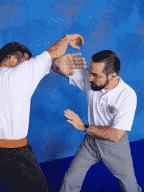
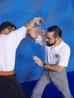

|
translation into English is actually "fighting principles". That's "fighting principles," not "fighting techniques." Unfortunately, most students and practitioners of the martial arts do not study fighting principles. Too often, they study (and teach) techniques rather than principles. Fighting techniques are not the same as fighting principles (actually, good techniques demonstrate sound fighting principles). Too many practitioners today believe that "the more techniques I know, the better fighter I will be." In reality, nothing could be further from the truth.
We need to stand back and see what a given technique is trying to accomplish. Instead, we try to put our hands exactly where the instructor put his, holding them exactly as he did. We do the same with our feet, the height of our stance, and on and on. We attempt a micro view of a macro process. The micro view is necessary but it must be carefully balanced with the big picture. Beginning students need a lot of "put your foot here," "hold your hand like this," and "bring your knee up at this angle." This is a necessary part of the learning process. However, as the student moves up in knowledge and skill, the amount of time spent on details like these should diminish, and he should eventually come to a point where greater emphasis is placed on how to evaluate technique to see the underlying principle. (This assumes, of course, that the student is being taught techniques designed to demonstrate and reinforce sound principles.) We are not saying that techniques are only for beginners. They are not. As teaching tools, techniques serve all students — beginning through advanced. The problem is that too many students today are required to learn and memorize many times more techniques than are really necessary. Techniques are not to be memorized as part of a long list. Rather, they should be used as a means to an end — a vehicle to bring the student to an understanding of the principles involved. Techniques provide hooks for the students to hang the principles on, so a certain number of them are necessary. However, considering the finite number of ways you can manipulate the human body, there is no reason for any system to maintain and perpetuate hundreds of them. To grasp the underlying principle of any technique we have to change our thinking in two ways. First, we must realize that every technique can be broken down into basic movements. Basic movements are like the letters of the alphabet. From a knowledge of the letters and how they are used and combined, we make words. From just the 26 letters in the English language more than half a million words can be formed. Furthermore, language is dynamic; alive. Words become obsolete. New words are constantly being made. But, the underlying letters do not change. Principles
Another example would be to bring your right hand to a position beside your right ear. Is this a protective maneuver or a vertical elbow strike? Are not the movements identical? Again, the application of the movement is the determining factor — again, what it does determines what it is. In an upward arm movement, like the one just described, how much difference does it make if the hand is formed in a fist or a chop? Most of the time, when learning a fighting principle, it makes very little difference. (It may make a difference in the specific technique, but usually not in the principle.)
This brings us to the next change that must occur in our thinking. Armed with the concept that a given technique is made up of basic movements, we zero in on the technique's objective. Is the goal to send your opponent flying 10 feet away? Is it to dump him at your feet? To bring him to his knees? Control him? What? Is the objective to place yourself behind him? To place him between you and someone else? To strike as a setup for another move? Here we take a broader look at the technique. We spend less time on minor intricacies (exact hand and foot placement, width of the stance, etc.) and more on the majors. (Realization of this fact alone greatly improves forms or kata appreciation and practice.) For example, in a given form you may not like your hand formed in a fist here or there; you may not even see it as necessary or even practical. But if you can see the purpose of the basic movement (the major), then you can live with the fist (the minor) and move on to understanding the underlying principle. You can say to yourself that in the absence of an actual opponent, your hand is formed as a fist. If, however, there were an arm there, you might hold your hand open, or bent this way or that. Breaking a technique down into its basic movements, then, leads to an understanding of the technique's underlying principle.
The Attack In a computer, the toughest instructions are those which make decisions. They take the most time to execute and require most of the machine's computing resources. In this respect, the human brain is no different. Our brains may be more sophisticated than the world's fastest computers, but it is still the decision-making process that takes all the time. By learning general principles rather than specific techniques, fewer decisions are needed in reacting to a situation. Moreover, because there are far fewer principles to learn, assimilation and subsequent development of spontaneous repetition are greatly accelerated. Mastering the Principles Translation Notes |
 Application Number 1
Application Number 1
 


|
||||
|
©Copyright Bob Orlando, 1991-2016 All rights reserved. |
http://www.OrlandoKuntao.com
E-mail: Ron@OrlandoKuntao.com |
Last update:
Aug. 6, 2016 by Bob Orlando |